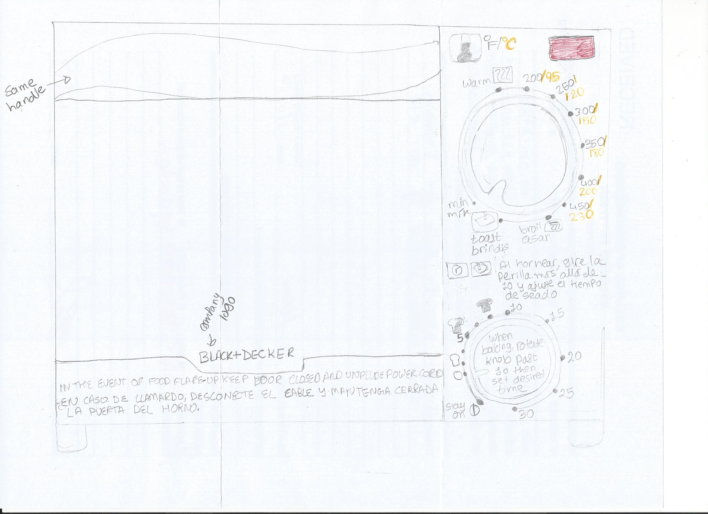

NOTE: All writing in black would be implemented in white color because the toaster is black.

First of all, since the toaster had options in English and Spanish, I decided to write them together. Since the first two knobs had same options, I decided to remove the middle knob. That would give more space for other options.
Furthermore, to indicate the temperate unit, I wrote Fahrenheit in white color and Celsius in yellow color.
I moved the "food flare-up" warning in the bottom, under the logo. That will be more visible. It will have black background color and the text written in white. It is given in both English and Spanish.
Further, the warning of going pass 10 before setting desire time, I moved that on top of the knob. It will be more visible to the users. Also, this message in Spanish is written above the knob, so it will not be missed out by the user.
Lastly, I added more time options to make is easier for the user if they want to set time between 10 and 20 or 20 and 30.
I decided to keep same handle to open the oven and same indication of its state.